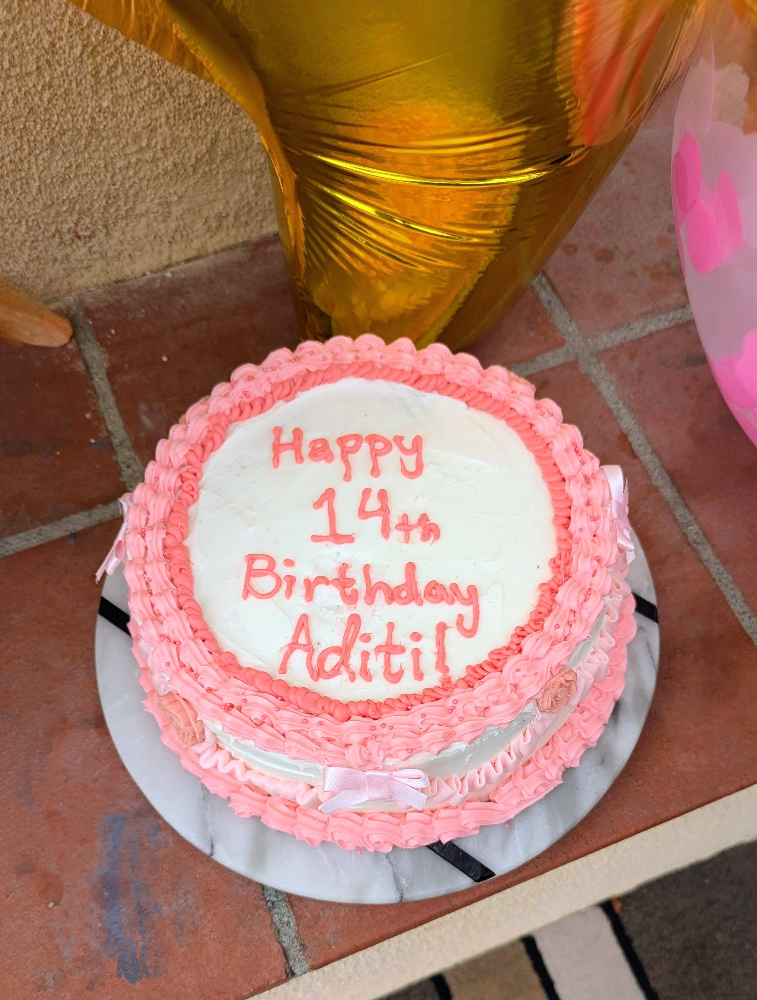

Decorating and Serving
After your vanilla cake has cooled, you can decorate it to make it look and taste even better. Here are some easy and creative decoration and serving ideas.
Simple Decoration Ideas
- Classic Frosting: Spread vanilla, chocolate, or any flavor of frosting over the top and sides of the cake. Use a spatula to make it smooth.
- Sprinkles: Add colorful sprinkles on top of the frosting for a fun look.
- Fresh Fruit Topping: Place sliced strawberries, blueberries, raspberries, or other fruit on top of the cake for extra flavor and color.
- Powdered Sugar Dusting: Lightly dust powdered sugar over the top of the cake if you want a simple and quick decoration.
- Drip Cake Style: Pour slightly warm chocolate ganache around the edge of the frosted cake and let it drip down the sides for a fancy look.
- Piping Designs: Use a piping bag (or a ziploc bag with a small corner cut off) to pipe stars, swirls, or borders around the top and bottom edges of the cake.
- Theme Toppers: Add small decorations like chocolate chips, candy pieces, or a paper cake topper with a message such as "Happy Birthday!".
Troubleshooting
If your cake does not turn out the way you expected, do not worry. Here are a few quick fixes you can try next time:
| Problem | Fix |
|---|---|
| Wet in the center | Bake it for a few more minutes and check again with a toothpick. |
| Flat and did not rise | Make sure your baking powder is fresh and measured correctly. |
| Dry | Bake it for a shorter time next time and double-check that you did not add too much flour. |
Serving Suggestions
Cut the cake into slices using a knife, and serve your vanilla cake at room temperature.
Enjoy!
Click the image to go to the Homepage.

